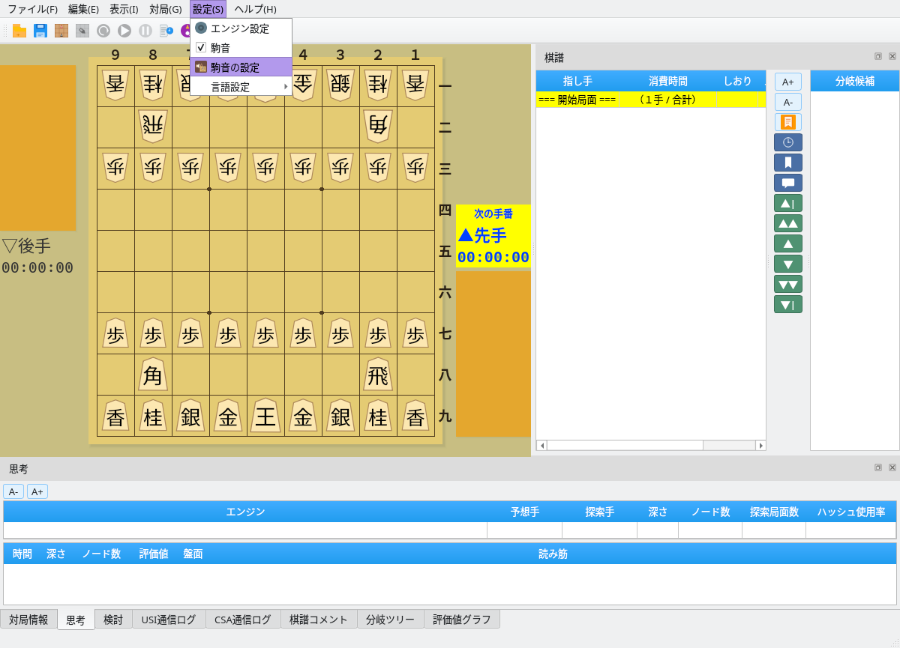
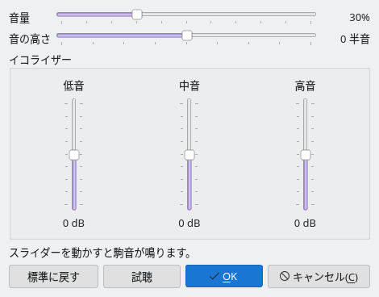

駒音
駒を指した瞬間に、盤に駒を打つ「パチッ」という音が鳴ります
ON/OFF切り替え
音量調整
イコライザー
駒音のON/OFF
「設定」メニューから、いつでも駒音を切り替えられます
1
「設定」→「駒音」で切り替える
メニューバーの「設定」を開くと「駒音」の項目があり、チェックが付いていれば駒音が鳴ります。初期状態ではONです。チェックを外すと駒音は鳴らなくなり、もう一度選ぶと元に戻ります。画像をクリックすると元のサイズで表示できます。
{kind=link}

「設定」メニュー：「駒音」でON/OFF、「駒音の設定」で音を調整
2
設定は自動で保存
ON/OFFの状態は自動で保存され、次回起動時にも引き継がれます。メニューウィンドウの「設定」タブからも同じ操作ができます。
音量と音質の調整
「駒音の設定」ダイアログで、音量・音の高さ・イコライザーを調整できます
1
「設定」→「駒音の設定」を開く
ダイアログには音量と音の高さの横スライダー、低音・中音・高音の3本の縦スライダーが並びます。スライダーを動かすたびに駒音が鳴るので、音を聞きながら調整できます。「試聴」を押せばいつでも現在の設定の音を確認できます。
{kind=link}

駒音の設定ダイアログ（初期状態）
2
スライダーで好みの音にする
- 音量：0〜100%。初期値は30%です。耳の感覚に合わせた目盛りで、50%でおよそ半分の大きさに聞こえます。
- 音の高さ：-12〜+12半音。上げると高く短い「チッ」、下げると低く長い「コン」という音に変わります。
- イコライザー：低音・中音・高音をそれぞれ-12〜+12dBで調整します。中音を上げると打撃感が強まり、高音を下げると柔らかい音になります。
3
確定・取り消し・標準に戻す
「OK」で設定を確定します。「キャンセル」を押すと、ダイアログを開いたときの設定に戻ります。「標準に戻す」を押すと音量30%・音の高さ0・イコライザー0の初期設定に戻せます。確定した設定は自動で保存され、次回起動時にも引き継がれます。
駒音が鳴る場面
対局中に盤上で駒が動いたときに鳴り、棋譜の閲覧や局面編集では鳴りません
| 場面 | 駒音 | 補足 |
|---|---|---|
| 人間の着手 | 鳴る | 人間 vs 人間、人間 vs エンジンで自分が指したとき |
| エンジンの着手 | 鳴る | 人間 vs エンジン、エンジン vs エンジンでエンジンが指したとき |
| 通信対局（CSA） | 鳴る | 自分の着手と相手の着手の両方 |
| 定跡手の着手 | 鳴る | 定跡ウィンドウから指した手も盤上の着手として扱われます |
| 棋譜の再生・分岐の切り替え | 鳴らない | 読み込んだ棋譜を進めたり戻したりする操作 |
| 局面編集・解析・検討 | 鳴らない | 駒の配置変更や、エンジンによる解析中の局面表示 |
駒音は、実際に榧の盤へ黄楊の駒を打った音を分析し、その特徴に合わせて作られています。動作にはQt Multimediaを使用し、OSの標準の音声出力から再生されます。